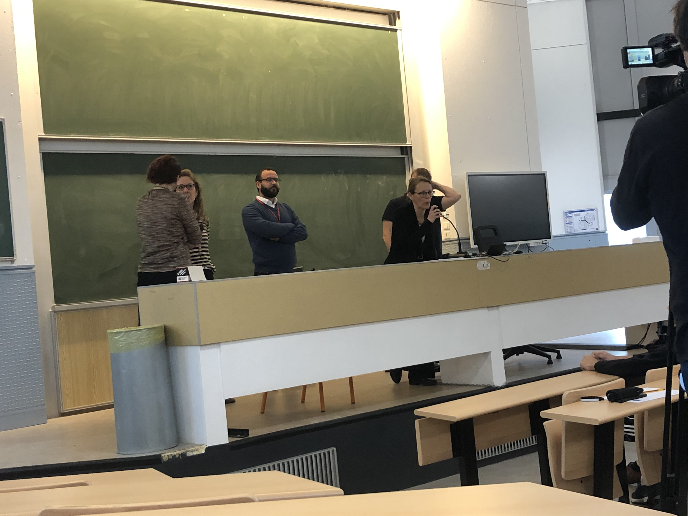
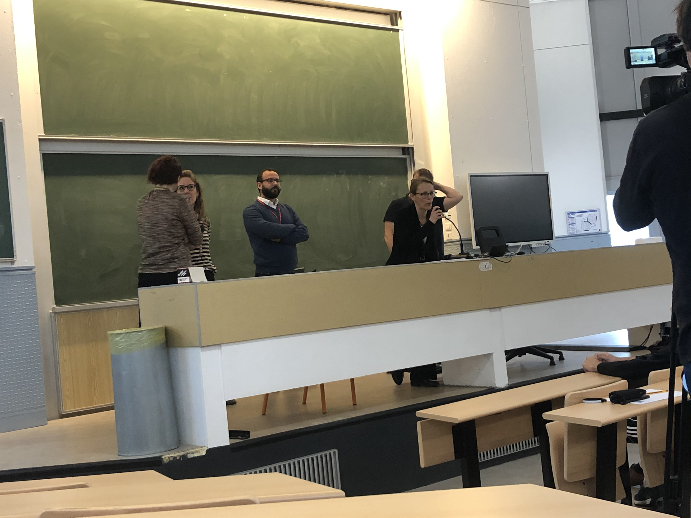
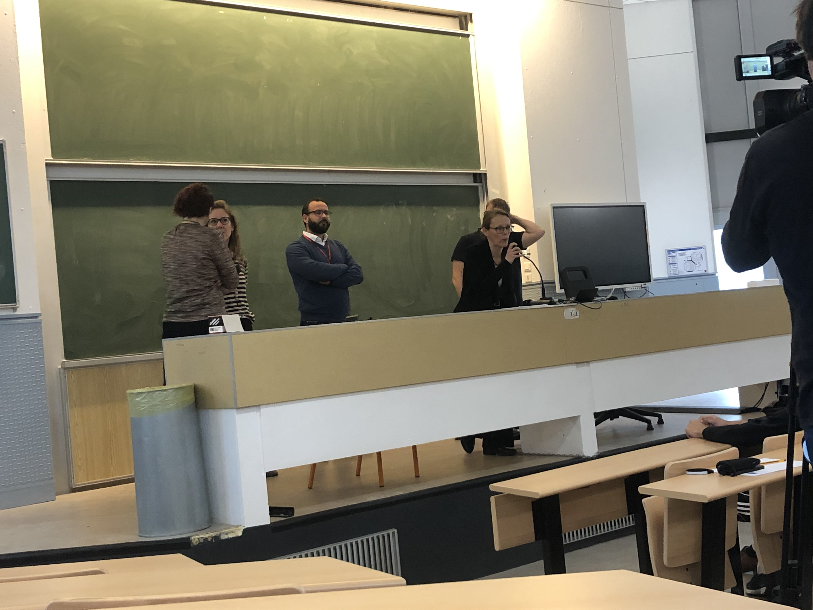

Le concours d'éloquence du 14 avril fut un moment intense et homérique pour
l’ensemble des étudiants.
D'autant plus que les professeurs ont été impressionnés par le niveau des techniques
de l'art oratoire utilisés par les candidats.
Des mises en
scènes originales, des styles propres à chacun, et des tons de voix
différé ont fait que cet événement fut une réussite.
Le sujet du concours: Le métavers: la vie est ailleurs ?
Les concours d'éloquence donnent aux candidats une variété
de sujets axés sur des thèmes précis qui devront être traités avec un minimum de
réflexion. Dans le cadre du concours d’éloquence du 14 avril, les professeurs se
sont réunis pour imposer un seul et unique sujet.
Le sujet “Le métaverse: la vie est ailleurs?” a touché particulièrement
les candidats car ils venaient principalement du département
informatique. Le sujet a donc fortement plût, orientant nettement vers le domaine
du numérique et des nouvelles technologies, dont notamment le metaverse, concept émergent et
actuel soulevant plusieurs questions sur leur usage.
Les participants
Pour ce concours, 12 candidats du département informatique dont 10 en BUT INFO et 2 en BUT STID,
ont été choisi parmi leur promotion respective après pré-sélection dans chaque groupe qui les constitue.
A. Brunella
M. Mazigh
P. Teva
B. Youssef
D. Sylla
S. Oussama
A. David
H. Kais
S. Tinhinane
V. Quentin
Keinan
Ann
Candidat: Mazigh
Étudiant du groupe Cygnus en BUT Info, Mazigh
nous a présenté un discours favorable au métavers,
en nous expliquant le métavers comme un projet révolutionnaire,
qui changera notre façon de vivre, travailler et communiquer.
Candidat: Quentin
Étudiant du groupe Pegasus en BUT Info,
Quentin nous a délivré une idée d'espoir
concernant les métavers à travers le
portrait d'un individu voulant mettre
fin à ses jours face à la réalité de la vie,
mais qui change d'avis en reprenant espoir
grâce aux multiples atouts du Métavers,
le tout en faisant usage des rhymes.
Candidat: Tinhinane
«La vie se doit de dépasser la technologie.»
Étudiante du groupe Andromeda en BUT Info,
Tinhinane fait partie des gagnants ex-aequo avec Kais en 1ère position du concours avec un discours contre l'introduction des métavers,
qui amènerait chaos au monde qui nous entoure.
Candidat: David
Étudiant du groupe Draco en BUT Info,
David a raconté l'histoire de deux amis:
Cédric qui est dépendant à l'alcool et
Léo qui lui est dépendant au métavers.
Avec le contraste entre vie virtuelle et vie réelle,
et inversement des des personnages vers l'autre vie,
il compare donc le métavers à un médicament que l'on peut prendre,
mais que l'on ne doit pas abuser.
Candidat: Kaïs
Étudiant du groupe Andromeda en BUT Info,
Kais a remporté la 1ère place ex-aequo avec Tinhinane
grâce à une prestation sous forme de tribunal en tant
qu'avocat défendant la Vie du Métavers coupable dans cette plaidoirie.
Candidat: Brunella
Étudiante du groupe Pegasus
en BUT Info, Brunella nous a accordé une prestation
émotionnelle en exprimant à voix haute le désespoir que
l'humanité pourrait faire face
avec l'introduction de technologies tel que le métavers.
Candidat: Teva
Etudiant du groupe Cygnus en BUT Info, Teva a opté pour un discours orienté sur
les divers bienfaits que le métavers pourrait nous apporter dans notre vie.
Candidat: Youssef
«Le métavers n'est autre que la suite logique de ce que nous avons bâti jusqu'à présent.»
Étudiant du groupe Draco en BUT Info, Youssef a fait référence à la période de confinement
que le monde a vécu récemment, et comment une avancé technologique tel que le métavers
aurait pu sauver des milliers de vie perdues face à la dépression causée par cet isolement
au monde.
Candidat: Sylla
Étudiant du groupe Phoenix en BUT Info,
Sylla a remporté la 2ème place du concours
avec un stand-up improvisé, comique et original.
Candidat: Oussama
« Réver de sa vie, plutôt que de vivre une vie de rêve ?»
Etudiant du groupe Phoenix en BUT Info, Oussama s'est exprimé pour le côté des opposants
aux métavers, en expliquant que la vie sur ces derniers n'est pas réelle et ne peut pas
remplacer la vraie vie, qui malgré ses défauts laisse tant de choses à vivre.
Candidat: Keinan
Étudiant en BUT STID, Keinan a opté pour une
présentation très originale sous forme de slam, qui selon le jury méritait la 3ème place.
Galerie des images du concours du 14 avril 2022

Extraits vidéos du concours
Les vidéos suivantes sont aussi visionnables depuis notre playlist YouTube.
Les candidats et spectateurs vous racontent leur expérience
Vous trouverez dans cette section plusieurs interviews vidéos de certains candidats et étudiants
présents ce jour là, réalisés par notre équipe.
Merci à nos camarades de promotion BALENDRAN Angela, MAZGAR Selma, BOUSSERHANE Salma,
JIN Céline et JEYARAJ Jeyanika de nous avoir accordé l'utilisation de leur interview
avec l'enseignant en communication M. Nait Ouslimane, membre du jury.
Les vidéos suivantes sont aussi visionnables depuis notre playlist YouTube.


 
